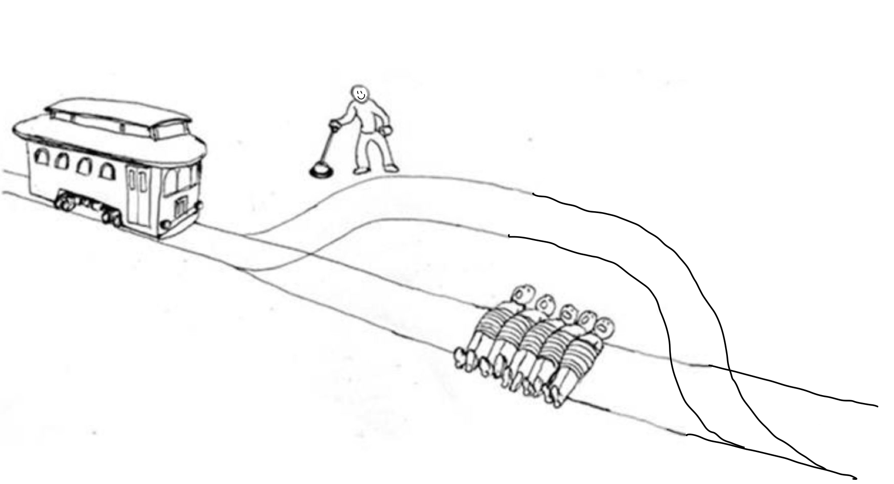

The Moral Decision Argument Against Decartes’s Skepticism of External World
(1)
Descartes’s skepticism about the external world has challenged my view.
(2)
Although I have seen many Sci-fi-themed movies and TV shows that depict the worlds as simulations, I have never logically doubted its existence before encountering Descartes’s skepticism about the external world. I believe that the physical world objectively exists, and I live directly in the world where I was born. I hold this view for two reasons: 1) My love for external objects. 2) My value in moral obligation.
First, I trust that I should form beliefs about the external world because I have strong affections for many external things. For example, I love my parents, my sister, my bed, my computer, and my body. My love for these objects and persons is part of my basic beliefs, so I trust that they objectively exist and will continue to exist without me. If they are just illusions and I cannot be sure about their physical existence, then my love for them would be pointless, and I will fall into the abyss of chaos and insanity.
Moreover, my beliefs about my moral duties also affirm my view of the external world. Growing up, I have been living according to specific ethical responsibilities. For example, I have never killed anyone because I know I should not harm anyone. If I doubt that the physical world is just lines of code in a simulation, then I lose my belief in my moral duties since there may be an actual world outside my immediate illusion.
For these two reasons, I hold firmly that an actual physical world exists directly outside of my consciousness, and I can trust and form beliefs about this world.
(3)
The Argument for Skepticism about the External World did not change my current belief about the objective existence of the physical world or impair my trust in it.
(4)
The second premise of the argument is central to the Cartesian Skepticism, stating that if you cannot rule out a situation which would make P false, you should not believe P. This mode of thinking (Doubt → No belief) was initially used by Descartes for examining his beliefs and thinking critically. However, I believe that this critical thinking method should not be raised to a level where I begin to doubt my fundamental beliefs panically. So I will reject Cartesian skepticism by arguing against its second premise.
(4.1) Why is the premise false?
To repudiate the argument, I will begin my refutation by telling a possible scenario: There are five people tied on the railway. A train is heading toward those five people and about to kill them when it reaches them. Nick is standing right next to a lever that can divert the train to a railroad where there are no people tied on it and will lead the train back on the original track once it passes the danger(See illustration). Unlike the original trolley dilemma where the person has to choose to save one life for five, Nick can easily save five lives without any negative impact by pulling the lever. Nick is a conscientious man, and his moral value tells him that he should pull the lever to save those five lives. However, for Nick to pull the lever, he should, at least, believe that his body exists and is functioning, which is necessary to complete the action. Soon enough, Nick pulls the lever with a determined mind to fulfill his moral duty and successfully saves the lives of those abducted men.
From this story, it is clear that Nick easily overcomes his doubt about the external world in this urgent situation, and it is hard to see why anyone else will do differently if she is in Nick's position. Thus, I formulate the following argument from a moral standpoint to refute Cartesian skepticism.
The Moral Decision Argument Against Cartesian Skepticism.
My argument took inspiration from Moore's Anti-Skeptical argument but added a layer of eloquence to it from the moral standpoint. It strengthens premise one of Moorean arguments by stating that it is sometimes moral to believe your body objectively exists. In this case, helping others is moral and helping others requires Nick to accept his body exists, so Nick should live up to his moral values and believe that the external world objectively exists despite the doubts and fear of illusions.
I expect criticism from a Cartesian perspective, arguing against premise four of my argument by forming the following lines of reasoning.
Cartesian Skepticism about body
In this case, my argument and Cartesian counterargument form a circle of reasoning. My argument uses its preconceived notion that the external world is real to argue against the premise of Cartesian skepticism, while the Cartesian response to my argument can use its preconceived notion that cartesian skepticism (doubt → no belief) is true to refute my reasonings. It is an epistemic paradox that cannot be resolved. So, here we have two fundamental beliefs that contradict each other, skepticism and the belief in the external world. Since each one can be used for rejecting the other, it is essential to find which one is more true to find the better method of forming a belief. In my case, my Moral Decision argument argues it is more likely for the external world to be real than the Cartesian skepticism to be true because morality requires that we believe in reality. To further defend my stand, I propose a Pascal calculation of utility to illustrate why we believe that the external world exists despite the uncertainty about sensory illusion.
There are two criteria to evaluate the expected utility of each case: 1) promoting morality, and 2) ensuring social stability.
For 1), since morality is built upon the basis that the external world is actual, you will receive the benefit only when you believe this is the case and it is actually the case. If you do not believe it is the case, or the external world is not true, then morality is pointless, and there is nothing a person should do.
For 2), the social stability is also based on the case that external is true. The disbelief of the external world may lead to neglect of social responsibilities, such as loving your family, paying taxes, protecting the environment, or not running a red light. Therefore, believing that the external world is true will increase the utility as it will ensure that society functions smoothly.
Given the above evaluation criteria, I assign the following utility values to them.
For the possibility of each case to be true, I assign fifty percent to each of them. I adopt this perfect agnostic view of possibility because this is the least contentious view of when the external world's existence is not falsifiable.
So we get this chart:
| Course of Action | External world Exist | External world doesn’t exist | Expected utility |
|---|---|---|---|
| Believe | 2 | 0 | 1 |
| Don’t believe | 0 | 0 | 0 |
| Probability | 0.5 | 0.5 |
This chart shows that the expected utility of believing the external world exists exceeds that of non-belief. The result illustrates that it is pointless to form doubts concerning the external world since there is zero utility in the disbelief of the external world. Meanwhile, the belief of the external world has a positive expected utility of one, evidencing that it is valuable to have confidence in the external world despite the possibility of sensory illusion.
In short, premise two of the Argument Against External World is invalid as it is overly restrictive. From a moral standpoint, I argue against the premise by concluding that it is permissible to believe in something without ruling out a situation that would make it false. It is sometimes necessary to believe in the existence of external objects to fulfill the moral obligation. Then, I refute the potential Cartesian response to my argument by stating that two views are in an epistemic paradox. We chose the external world over doubt because it generates more expected utility. Therefore, it is pointless to doubt the external world using Cartesian thinking.
(4.2) Why is my view more likely to be true than false?
In the end, I believe that my original view is more likely to be true than false because it ensures my sense of moral obligation. Since morality is built upon the existence of a physical world, the doubts of it will eradicate any sense of moral responsibility. In Nick's situation, the ability to save the people requires him to believe in the existence of his body and that what he does has authentic impact. For me, when I hold the door open for a person, I should also have no doubt about that person's existence and the feeling of my arm holding the door. Therefore, to ensure this healthy sense of moral obligation, we can believe in the external world with certainty despite the possibility of sensory illusion.
Moreover, according to the previous utility calculation, I also believe that I gain more by trusting the external world than doubting it through Cartesian skepticism. So in a consequentialist perspective, I see no point in challenging the external world despite the fact that I cannot rule out the possibility that we live in the simulation.
To conclude, I remain that an objective physical exist immediately outside of my consciousness.
By Nathan An 2021/12